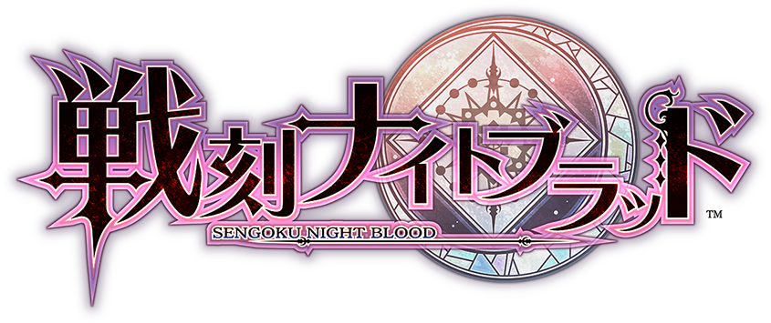

劇情大綱
平穩而乏味的鄉村生活的少年·近衛刀太，
有着前往都市一展宏圖的夢想。
為此，他每天都向養育了自己的親人，
同時也是優秀的魔法使·雪姬發起挑戰。
但，一邊戰鬥一邊和睦度日的兩人面前出現的賞金獵人，
宣告了平穩鄉村生活的終結。
這是，成為不正經者的人們的物語。
2017年10月新番
UQ HOLDER! 悠久持有者！
10月2日放送開始
STAFF
監 督：鈴木洋平
劇本統籌：赤松健、安川正吾
人物設計：藤井昌宏
美術總監：鈴木友成
色彩設計：舩橋美香
攝影總監：福世晋吾
編 集：後藤正浩（Real-T）
音響監督：鶴岡陽太
効 果：山谷尚人
錄音調整：椎原操志
音響制作：樂音舍
音 樂：羽岡佳、石毛駿平
音樂製作：國王唱片
企劃製作：EGG FIRM
動畫製作：J.C.STAFF
製 作：UQナンバーズ
CAST
近衛刀太 ：高倉有加
雪姫 ：松岡由貴
時坂九郎丸：廣瀨唯希
櫻雨桐衣 ：茅野愛衣
夏凜 ：小倉唯
結城忍 ：原田彩楓
雪廣霙 ：鬼頭明里
飴屋一空 ：柿原徹也
宍戶甚兵衛：咲野俊介
真壁源五郎：梶 裕貴
涅吉·史普林菲爾德：佐藤利奈
相坂小夜 ：白鳥由里
綾瀬夕映 ：桑谷夏子
神樂坂明日菜：神田朱未
絡繰茶茶丸：渡明乃
佐佐木蒔繪：堀江由衣
龍宮真名 ：佐久間未帆
宮崎和香 ：能登麻美子
雪廣綾香 ：皆川純子
菲特·亞維路克斯: 石田彰
傑克·拉坎：小山力也
阿爾比雷歐·伊馬：小野大輔
Black Clover 黑色五葉草
10月3日放送開始
劇情大綱
曾經險些遭到魔神毀滅的世界，
拯救它的是一位被後世稱為「魔法帝」的魔導士……
兩位被遺棄在教堂的少年，
一位是有卓越魔力跟魔法才能的四葉草魔導書的尤諾，
另一位魔法值為零但卻意外獲得黑色五葉草的魔法書的阿斯塔……
這是關於一位沒魔法能力的少年卻想要成為魔法帝的故事。
STAFF
監 督：吉原達矢
劇本統籌：筆安一幸
角色設計：竹田逸子
副角色設計：德永久美子
道具設計：高橋恆星
美術監督：前田有紀
攝影監督：國井智行
色彩設計：篠原愛子
編 集：奥田浩史
音 樂：關美奈子
音響監督：髙桑 一
動畫製作：Studio Pierrot
製 作：黑色五葉草ー製作委員會
CAST
阿斯塔：梶原岳人
尤諾：島﨑信長
諾艾兒·西爾法：優木加奈
夜見・祐弘： 諏訪部順一
費蘭爾・爾拉凱斯： 福山 潤
馬古納・斯威格： 室 元氣
拉克・鮑爾提亞： 村瀨 步
葛修・亞德雷： 日野 聰
凡妮莎・艾諾泰卡： 水樹奈奈
恰咪・帕皮特森： 安野希世乃
戈登・阿格里帕：松田健一郎
尤利烏斯·諾瓦克羅諾：森川智之
維利亞姆・范傑思：小野大輔
米莫薩・凡米里歐：西 明日香
克勞斯・流奈特：寺島拓篤
諾傑爾・西爾法：鳥海浩輔
費根里昂・凡米里歐：小西克幸
夏洛特・洛絲蕾：小林 優
開膛手・傑克：浪川大輔
賽凱・布隆薩薩：逢坂良太

Senkoku Night Blood 戰刻夜血
10月3日放送開始
劇情大綱
有一天，
結月被智慧型手機突然放出的謎一樣的光包圍，來到了未知的地方。
在她眼前展現的一片風景彷彿戰國時代的日本--
那裡是有著被稱作「神牙」的吸血鬼與人狼生活的異世界。
很久以前，「神牙」原來是由有特別血脈的「姬神子」所保護，
讓每個種族都和平地生活。
但是，有一天「姬神子」卻忽然消失了。
失去了巫女殿下的守護後，
被稱作「月牙族」武將們以天下統一為目地開始爭鬥，
而世界正式迎接了戰亂的時代。
而且，就像對這個混亂的回應一樣，
攻擊人們的神秘怪物也在各個地方開始猖獗。
率領豐臣軍的武將 ─ 豐臣秀吉，幫助在自軍戰場出現的結月，
並將她帶回城裡，在偶然之下，
知道她的血有能夠喚醒月牙族的力量。
之後，織田、上杉、武田、真田、與伊達的各軍隊也知道
結月的血所擁有的力量，
於是各別帶著不同的想法，為了結月而開行動。
一隻背茶壺的白色的狸聽從消失的「姬神子」的命令
「找從異世界來的少女」 ─ 伊萬狸，與繼續增加的「厄魔」……。
武將們開始接觸結月的力量，
是為了守護什麼，又為了與誰鬥爭？
以戰亂的異世界為舞台編織的新的故事的即將展開--。
STAFF
監 督：菊池勝也
劇本統籌：柿原優子
角色設計：小松原 聖、
奥山鈴奈、
中田知里
美術監督/設定：中原英統
攝影監督：今泉秀樹
色彩設計：松山愛子
編 集：櫻井 崇
音 樂：堀向直之
音樂製作：TV ASAHI MUSIC
音響監督：横田知加子
音響製作：Delfisound
動畫製作：Typhoon Graphics
CAST
豊臣秀吉：花江 夏樹
石田三成：佐佐木 喜英
黑田官兵衛：武內 駿輔
竹中半兵衛：逢坂 良太
前田利家：山本 一慶
織田信長：森川 智之
明智光秀：島崎 信長
森蘭丸：小林 裕介
柴田勝家：森田 成一
丹羽長秀：前野 智昭
上杉謙信：鳥海 浩輔
柿崎景家：興津 和幸
甘粕景持：綠川 光
上杉景勝：荒牧 慶彦
直江兼續：柿原 徹也
武田信玄：小西 克幸
山県昌景：中島 芳樹
高坂昌信：木村 良平
內藤昌豊：西山 宏太朗
馬場信春：安元 洋貴
真田幸村：山下 大輝
真田信之：森久保 祥太郎
猿飛佐助：村瀬 步
霧隱才藏：北村 諒
由利鎌之助：八代 拓
伊達政宗：梅原 裕一郎
伊達成実：岡本 信彦
片倉小十郎：佐藤 拓也
12 Taisen 十二大戰
10月3日放送開始
劇情大綱
充滿自負的十二戰士的血戰的記錄 ――
十二年一度的十二大戰的第十二回。
擁有十二生肖名義的十二名勇士將賭上生命和靈魂彼此爭鬥。
參加者是「子」「丑」「寅」「卯」「辰」「巳」「午」
「未」「申」「酉」「戌」「亥」十二名異樣的戰士。
在這場互相殘殺中生還之人，能夠實現任何一個願望――
活到最後的是誰？
在謀略與殺戮席捲的戰場上，落下的是誰的眼淚？
驚心動魄的混合大戰，開戰！
STAFF
原 作：西尾維新
漫 畫：中村光
監 督：細田直人
劇本統籌：村井貞之
角色設計：嘉手苅睦
音 樂：椎名豪
音樂製作：avex pictures
動畫製作：Graphinica
製 作：十二大戰製作委員會
CAST
寢住/墨野繼義：堀江瞬
失井/樫井榮兒：梅原裕一郎
妒良/姶良香奈江：五十嵐裕美
憂城：岡本信彦
斷罪・兄/積田長幸：江口拓也
斷罪・弟/積田剛保：鳥海浩輔
迂迂真：綠川光
必爺：長
砂粒/柚木美：早見沙織
庭取/丹羽遼香：佐倉綾音
怒突/津久井道雄：西村朋紘
異能肉/伊能淑子：日笠陽子
杜碟凱普：安元洋貴
Shokugeki no Soma S3
食戟之靈 餐之皿
10月3日放送開始
劇情大綱
一邊在老家的定食店「幸平餐館」方面幫忙，
一邊提高做菜本領的幸平創真，
進入了超精英廚藝學校「遠月學園」就讀。
創真在學校遇見各式各樣的廚師們，並且在持續成長中，
開始摸索屬於自己的料理。
在前往實際做菜的現場，學習實戰的課題「實地研修」中，
更進一步累積經驗的創真，打破了「迄今為止的自己」，
并且最終創造了新「幸平餐館」的料理，達到了一個成長。
在完成實地研修後，在每一天的食戟更進一步重復鑽研的創真，
在「紅葉狩會」上，
向學校的頂點「遠月十傑」發出挑戰。
創真為了和十傑比賽，關注了作為遠月恆例行事的學園祭--
著名的「月饗祭」。
每年，有50萬個人拜訪的怪物活動，而他能夠成功嗎!？
另一方面，出自某個背後人物的計劃將開始行動--？
創真的新的戰鬥即將開幕！
STAFF
原 作：附田祐斗、佐伯 俊
協 力：森崎友紀
監 督：米谷良知
劇本統籌：安川正吾
角色設計：下谷智之
副 監督：佐藤光敏
副 設計：小森 篤
美術監督：備前光一郎
色彩設計：伊藤由紀子
攝影監督：黑澤 豊
編 集：近藤勇二（REAL-T）
音 樂：加藤達也
音響製作：明田川 仁
動畫製作：J.C.STAFF
OP主題曲：ZAQ「BRAVER」
ED主題曲：nano.RIPE「虛虛實實」
CAST
幸平創真：松岡禎丞
田所 恵：高橋未奈美
新戶緋沙子：大西沙織
巧·阿爾迪尼：花江夏樹
第一席 司瑛士：石田彰
第二席 小林龍膽：伊藤靜
第三席 女木島冬輔：未公開
第四席 茜久保桃：釘宮理惠
第五席 齋藤綜明 ：未公開
第六席 紀之國寧寧：花澤香菜
第七席 一色慧：櫻井孝宏
第八席 久我照紀 ：梶裕貴
第九席 睿山枝津也 ：杉田智和
第十席 薙切繪裡奈 ：金元壽子

Infini-T Force
10月3日放送開始
劇情大綱
集合了動畫公司「龍之子」旗下四部經典英雄作品，
包括《科學小飛俠》、《再造人卡辛》、《宇宙騎士機械巨神》、《破裏拳旋風俠》的英雄主角，
為了紀念龍之子在 2017 年 10 月將迎接創立 55 周年所特別推出的企劃之一。
作品使用 3DCG 的方式製作，並主打以現代風格呈現。
STAFF
原 作：龍之子製作公司
監 督：鈴木清崇
劇本統籌：大野敏哉
角色設計：大暮維人
英雄設計：佐藤敬一
西裝·機械設計：中北晃二
編 集：奥田浩史
音 樂：山田豐
音響監督：明田川 仁
3DCG制作：Digital Frontier
製 作：龍之子製作公司
製作著作：Infini-T Force製作委員會
OP主題曲：flumpool「To be continued...」
ED主題曲：edda「チクタク」
CAST
科學小飛俠／鷲尾 健：關 智一
宇宙騎士／南 城二：櫻井孝宏
旋風俠／鎧 武士：鈴村健一
再造人卡辛／東 鐵也：齊藤壯馬
界堂 笑：茅野愛衣
Z：斧 篤志
拉加·坎：安元洋貴
達米安·格雷：平川大輔
貝爾·琳：花澤香菜